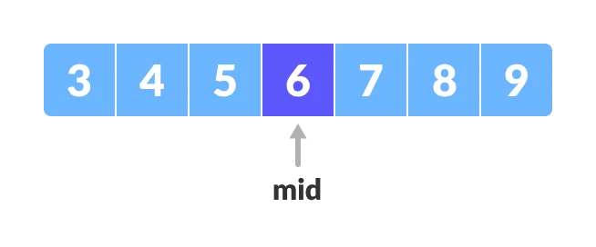

Binary search is a fast search algorithm with run-time complexity of Ο(log n). This search algorithm works on the principle of divide and conquer. For this algorithm to work properly, the data collection should be in the sorted form.
Binary search looks for a particular item by comparing the middle most item of the collection. If a match occurs, then the index of item is returned. If the middle item is greater than the item, then the item is searched in the sub-array to the left of the middle item. Otherwise, the item is searched for in the sub-array to the right of the middle item. This process continues on the sub-array as well until the size of the subarray reduces to zero. Binary search can be implemented only on a sorted list of items. If the elements are not sorted already, we need to sort them first.
Binary Search Algorithm can be implemented in two ways which are discussed below.
The recursive method follows the divide and conquer approach. The general steps for both methods are discussed below.
The array in which searching is to be performed is:

Initial array
Let x = 4 be the element to be searched.
Set two pointers low and high at the lowest and the highest positions respectively.

Setting pointers
Find the middle element mid of the array ie. arr[(low + high)/2] = 6.
Mid element
If x == mid, then return mid.Else, compare the element to be searched with m.
If x > mid, compare x with the middle element of the elements on the right side of mid. This is done by setting low to low = mid + 1.
Else, compare x with the middle element of the elements on the left side of mid. This is done by setting high to high = mid - 1.
Finding mid element
Repeat steps 3 to 6 until low meets high.
Mid element
x = 4 is found.
Found
do until the pointers low and high meet each
other.
mid =
(low + high)/2
if (x ==
arr[mid])
return mid
else if
(x > arr[mid]) // x is on the right side
low
= mid + 1
else // x is
on the left side
high
= mid - 1
binarySearch(arr, x, low, high)
if low
> high
return False
else
mid
= (low + high) / 2
if x
== arr[mid]
return mid
else
if x > arr[mid] // x is on the right side
return binarySearch(arr, x, mid + 1, high)
else
// x is on the right side
return binarySearch(arr, x, low, mid - 1)
Another topic: